Spider Monkeys Defeat
Pronghorns 140-133 in Cork Bowl 18; Trimble Becomes First Player from Losing
Team to Win MVP with 17 Catch, 6 Touchdown, 16 Tackle Performance; Willy
Truitt Throws 20 Touchdowns in Win; Reggie Truitt Throws 19 in Defeat; Patrick
Cork Catches 19 Passes with 9 Touchdowns; Henney Has 18 Receptions and 6
Touchdowns
Click Here for Stats
(Click Here
for More Pictures! (thanks
to Joe Trimble and Canon)
Saturday, November 22nd - The much
anticipated returns of Reggie and Willy Truitt, who each missed a Cork Bowl
for the first time since 1995 last year, was expected to be the headline
story of Cork Bowl 18 and the two brothers didn't disappoint. In an offensive
masterpiece, each team was stopped 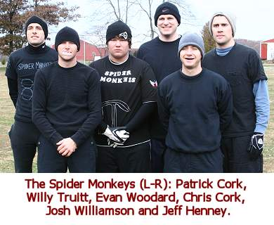 just once and the game wasn't decided until the final play
as the Spider Monkeys held on for a 140-133 victory. There were a handful
of first-time occurrences in the game. It was the first time a Cork Bowl
ever came down to the final play and the first time a player from the losing
team was awarded the MVP award as Pronghorn Robert Trimble dominated from
start to finish on both sides of the ball. However, Trimble's efforts were
not enough to rescue the Pronghorns from defeat.
Game-time temperatures hovered around
30 degrees with a stinging breeze from the south making it feel like 20-degree
weather for much of the game. The cold temperatures didn't seem to play
much of a factor as both offenses came out of the gates sizzling. Reggie
found Robert Trimble on the first two plays of the game for back-to-back
completions and the game's first score, however Willy answered right back
with a completion to Jeff Henney and a 19 yard touchdown to Patrick Cork
to tie the game 7-7. The first big moment of the game came on the next drive
as the Pronghorns were faced with a fourth-and-8 situation near 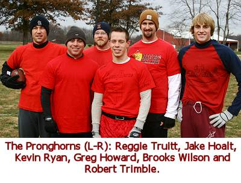 midfield. Reggie's
pass was too high for Brooks Wilson and deflected high off his hands, but
in what would be the case for most of the game, Robert Trimble was in the
right place at the right time and made a diving catch off the deflection
for a huge first down to keep the drive alive (VIDEO). Two plays later Jake Hoalt hauled in his
first touchdown of the day for a 14-7 lead for the Pronghorns. "You
usually only get a few opportunities to make a stop or big play on defense
and that was the first of several missed chances early," stated Jeff
Henney.
After two straight incompletions,
the Spider Monkeys were faced with 3rd and long, but Willy found Patrick
Cork streaking down the sideline for a length-of-the-field touchdown (the
70th of Cork's career) to knot the game at 14-14 (VIDEO). Brooks Wilson and Henney took turns hauling
in touchdown passes on the next four drives to move the game to 28-28 with
under 5 minutes to go in the first quarter. The Spider Monkeys once again
missed two opportunities to stop the 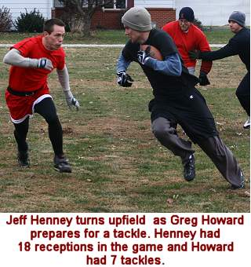 Pronghorns on the ensuing drive. The first came on the first
play when Reggie Truitt tried to go deep down the middle to Trimble. Chris
Cork dropped off his man into the passing lane, but the ball slipped through
Cork's fingertips and fell incomplete. The Pronghorns threw two more incomplete
passes to put them in a difficult 4th-and-20 at their own 3-yard line. The
team convinced Reggie Truitt to go for it and the gamble paid off as Kevin
Ryan broke wide open deep to the right for a 30 yard completion, and Wilson
scored a touchdown for the third straight drive to end the first quarter
with the Pronghorns leading 35-28. "We were trying to decide if we
should go for it on 4th down, but we figured the Spider Monkeys were going
to score whether we punted or not so we had nothing to lose," said
Greg Howard. "Kevin got open and made a huge catch."
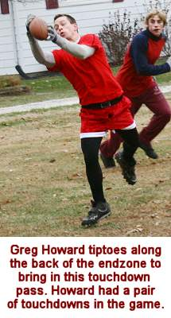 Willy
Truitt was outstanding in the opening quarter completing 9 of 11 passes
for 4 touchdowns (2 apiece for Henney and Patrick Cork). Although the Pronghorns
scored on all five possessions, they were a little inconsistent at times
as Reggie completed just 12 of 21 passes for 5 scores. Wilson led all receivers
with 5 catches and 3 touchdowns in the quarter. "We figured they would
be the quick-strike offense, but it was the other way around - at least
early in the game," stated veteran Chris Cork. "We only had the
ball 11 plays but were able to score four times."
The Spider Monkeys stayed red hot
to open the second quarter as it took just two plays to score yet again
as Henney caught his third TD of the game to tie the game. The touchdown
pass was Willy's 9th consecutive completion - four of which went for scores.
Trimble caught his second touchdown of the game to move the score to 42-35,
but 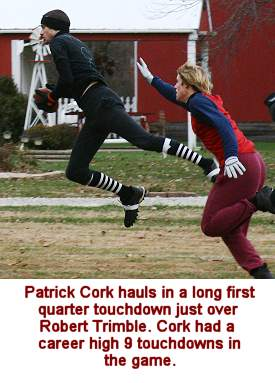 Patrick
Cork answered with a 24 yard touchdown on the next drive to tie the game
at 42-42. Back-to-back completions to Jake Hoalt moved the ball inside the
five yard line for the Pronghorns, and Greg Howard capped the drive with
a beautiful tip-toe catch in the back of endzone to go up 49-42.
The Spider Monkeys were faced with
another 3rd and 20 on the next drive and converted yet again - this time
on a length-of-the-field touchdown pass to Chris Cork to tie the game at
49-49 (VIDEO).
After a Jake Hoalt touchdown, Willy connected on four straight passes with
Josh Williamson scoring from six yards out to tie the game at 56-56 with
under 10 minutes to go in the half. The first mistake of the game came on
the next play as Reggie tried to force a throw to Greg Howard, but the ball
was underthrown and Jeff Henney picked off the pass and returned it to midfield
(VIDEO).
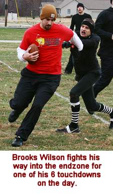 It
was Henney's 7th interception in five career games.
Three plays later, the pass intended
for Patrick Cork was deflected by Greg Howard, but Cork was able to catch
the 8 yard touchdown pass off the deflection with his knees (VIDEO) to
give the Spider Monkeys their first lead of the day at 63-56 with under
5 minutes left in the half. "I knew Patrick had pretty good hands,
but I never knew he had good knees too," said quarterback Willy Truitt.
Brooks Wilson caught his fourth touchdown of the half on the next drive
on a big 4th down play as he was able to get both feet inbounds in the front
of the endzone (VIDEO)
to tie the game at 63-63. The Spider Monkeys had one more chance to score
as the clock ticked under one minute. Completions to Williamson and Patrick
moved the ball across midfield with 12 seconds to go. Willy found Henney
inside the five yard line with 5 seconds left leaving time for one final
play. The Spider Monkeys capitalized as Willy found Patrick in the endzone
for the third time in the quarter as time expired with the Spider Monkeys
leading 70-63. 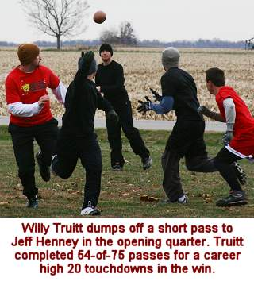
It was the fourth year in a row that
the last minute of the first half resulted in a huge momentum shift. In
Cork Bowl 15 there was the length of the field lateral play, two years ago
Patrick Cork returned an interception for a touchdown as time expired, and
last year Chris Cork caught two passes in the final 10 seconds to end the
half. All three of those teams went on to win the game. "We were in
a tough spot on whether to use timeouts or not," said Reggie Truitt.
"We could have tried to stop the clock and get another possession,
but they almost ended up running out of time themselves so it's hard to
know what the right decision is."
Willy Truitt continued his torrid
pace going 15-for-20 in the quarter with six more touchdowns. Henney and
Patrick Cork each had 5 catches in the period with Cork scoring 3 touchdowns.
Reggie was 10-for-17 with four scores, but did have the costly interception.
Trimble began to come alive leading his team with 4 catches in the quarter.
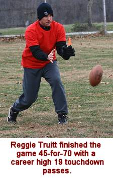 Willy
Truitt was 24-for-31 in the first half with 10 touchdowns while Reggie was
22-for-38 with 9 scores. Henney led all players with 9 first half catches,
3 of which went for touchdowns. Patrick Cork had 8 catches and 5 scores.
Wilson and Trimble each had 7 catches for the Pronghorns with Wilson scoring
4 times and Trimble scoring twice.
The late touchdown for the Spider
Monkeys was even more important due to the fact that they started the second
half with the ball and a chance to push the lead to two scores. The drive
almost ended on the first play as Willy's pass for Henney was nearly intercepted
by Greg Howard who dove in front of the pass to knock the ball away. Another 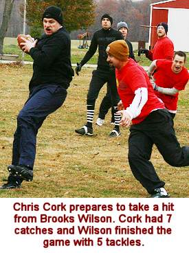 incomplete pass
set up another 3rd and long for the Spider Monkeys. They were able to get
half of the yardage on a short pass to Williamson, but were still faced
with a 4th and 12. Willy was able to find Henney who shook a defender and
took it the distance for a touchdown (VIDEO) and the Spider Monkeys had the first two-score
lead of the day at 77-63. With all the pressure on the Pronghorns, Reggie
marched his team down the field and hit Trimble for a 1 yard touchdown to
cut the lead to the 77-70.
After a dominating first half, the
Spider Monkeys found themselves in trouble for the second consectutive drive
as they were faced with another 4th down play at midfield. Willy Truitt
looked to Jeff Henney, but Henney turned to the inside as Truitt's throw
went to the sideline and fell incomplete for the first and only turnover
on downs of the game. The Pronghorns took advantage immediately as Reggie
hit Wilson in the flat for a 20 yard score and the game was even once again
at 77-77 (VIDEO).
The Spider Monkeys moved the ball inside the 10 yard line, but Willy was
nearly picked off in the endzone as Reggie Truitt dove in front of a pass
intended for Henney but was uanble to hold on. Williamson scored on the
next play to make the score 84-77 and Kevin Ryan answered with a score of
his own to tie the game at 84-84.
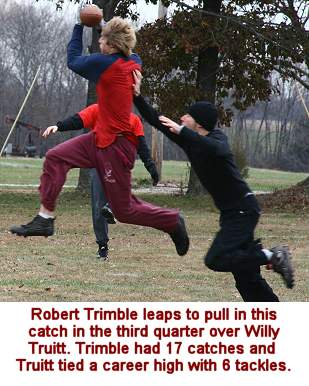 Willy
connected on the 400th completion of his career on the next drive and Henney
scored his fifth touchdown of the game for a 91-84 lead on a beautiful tiptoe
catch in the corner of the endzone (VIDEO), but Reggie answered quickly with a short
touchdown to Jake Hoalt to tie the game. After Willy was red hot in the
first half, Reggie came out firing in the second half completing 10 of his
first 12 passes. Patrick Cork took a short pass all the way for a 38 yard
score on the next drive thanks to a huge lead block by Evan Woodard (VIDEO),
but Howard answered with a length-of-the-field catch and run touchdown of
his own to tie the game at 98-98 as the third quarter ended (VIDEO).
After being sharp in the first half,
Willy struggled at times in the third quarter completing just 13-of-22 passes
for 4 touchdowns. Meanwhile, Reggie was 11-for-14 with five scores. All
5 receivers for the Pronghorns scored one touchdown in the third quarter
and Trimble led the team with 4 catches in the period. Patrick Cork (5 catches,
1 touchdown) and Henney (4 catches, 2 touchdowns) continued to pace the
Spider Monkeys.
As the fourth quarter began, the Spider
Monkeys appeared to be slowing down on both sides of the ball, while the
Pronghorns showed very little fatigue. "With Trimble and Howard, they
had two guys that weren't tired at all," stated Patrick Cork. "Our
team was sucking air big time. At some point in the third quarter our team
went into survival mode. We kept telling ourselves to worry about getting
a first down and after we did that, try to get in the endzone any way we
could - there was nothing fancy, we were just trying to hang on as well
as we could. It reminded me a lot of Cork Bowl 10 when our team had 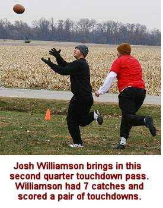 a big lead in the
4th quarter and ran out of gas and almost lost. The only difference was
we didn't have a big lead to help us this time."
Chris Cork scored his second touchdown
of the game on the second play of the 4th quarter to put the Spider Monkeys
over the century mark with a 105-98 lead. The touchdown was the 150th of
Willy Truitt's career. Wilson answered with his sixth score of the game
to tie the score at 105 apiece, but a pair of completions to Patrick Cork
moved the ball to the one yard line for the Spider Monkeys and Evan Woodard
hauled in the first touchdown of his career to make the lead 112-105 (VIDEO).
With the game on the line once again,
the Pronghorns were faced with a 4th and 12 deep in their own territory,
but for the fourth time in the game Reggie converted the 4th down conversion
- this time on a pass to Trimble that he was able to take the distance for
a 30 yard score to tie the game at 112-112. With the Spider Monkeys 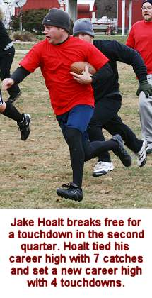 now struggling to
find consistency on offense, they found themselves in another 4th down situation
near midfield on the next possession. Willy was able to rifle a pass to
Henney just past the first down marker to keep the drive alive, and Patrick
Cork scored his 7th touchdown of the game on the next play to move the lead
to 119-112. As easy as things were for the Spider Monkeys in the first half,
they were equally as difficult in the second half. They only faced five
3rd downs in the entire first half, but found themselves with three 4th
down plays in their first eight possessions of the second half. "We
only had three drives in the first half that were more than three plays,"
said Patrick Cork. "Then it seemed like every drive in the second half
was taking five or six plays to score. It was definitely a struggle, but
we had a lot of different guys step up and make plays when we had to have
them."
Reggie answered with four straight
completions and another touchdown to Hoalt (his fourth of the game) to tie
the game again at 119, but Willy went went to his top targets hitting Henney
twice to move the ball to the one yard line before finding Patrick in the
front of the endzone for a score and a 126-119 lead with under 10 minutes
to play. Trimble continued his strong game with a 20 yard score on the third
play of the next drive to knot the game again at 126 as the clock ticked
under the 5 minute mark. 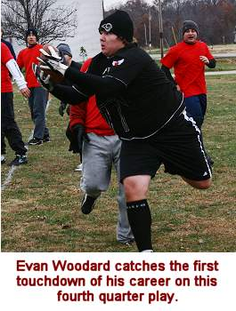
Willy once again found his rhythm
on offense as he hit four consecutive passes including another one-yard
touchdown to Patrick - his ninth score of the game and third in the final
quarter. The Spider Monkeys now led 133-126 with 1:30 remaining. The Pronghorns
were hoping to get a score and leave as little time as possible on the clock,
but Trimble made yet another huge play by breaking tackles and taking it
the distance on the first play to tie the game at 133-133 (VIDEO) as
the clock was stopped for the 1 minute warning. "The number one priority
was to make sure we scored," said Reggie Truitt. "We were hoping
to put a nice drive together to run some clock, but you can't fault Robert
for taking it all the way. We still needed those points."
Both teams had all three timeouts
remaining so the final minute became a strategic matchup of clock management.
"We discussed what we wanted to do with the clock," said Jeff
Henney. "But the bottom line was we had to get in the endzone. If it
happened in one play that was fine, but if we could run some time off we
were going to try."
Willy found Chris over the middle
on the first play, and Cork was able to break away from a defender and fight
forward for a few extra yards while also taking several precious seconds
off the clock. Neither team called a timeout as the clock ticked down to
30 seconds before the next play was run. Willy's pass to Patrick fell incomplete
stopping the clock with 24 seconds left and leaving the Spider Monkeys with
a big third and 8 near midfield. Willy hit Henney in the left flat past
the first down line and Henney was able to shake one defender, however Reggie
Truitt had a chance to bring him down around the five yard line, but elected
to let Henney score to ensure the Pronghorns another possession. Henney's
score was the sixth of the game and gave the Spider Monkeys a 140-133 advantage
with just 14 seconds on the clock.
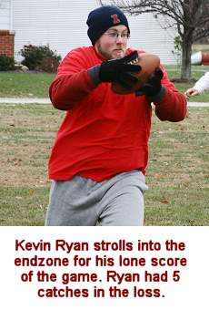 "I
thought they might call a timeout after our first pass to Chris because
that took 30 seconds off the clock," said Patrick Cork. "It's
a tough spot to be in and I'm glad we were the ones on offense and didn't
have to worry about the clock. Reggie made a heads up play by letting Jeff
score - it guaranteed they would get one last shot to tie the game."
Greg Howard added, "If we are able to stop them on that third down
play, they are stuck with 4th down and we have a really good shot at getting
the ball with all of our timeouts. It was a tough place to be for us because
there really isn't a right or wrong way to do it."
With only 14 seconds to go, the Pronghorns
needed yards quickly and completed a short pass to Wilson over the middle
for 10 yards and called a timeout with 8 seconds left. On second down, Reggie
couldn't handle a low snap and had to hurry his a deep pass to Jake Hoalt
which fell incomplete with just 2 seconds left. "You have to make sure
you get two plays off," said Reggie. "Unfortunately with the bobbled
snap I didn't have time to do anything but pick up the ball and throw it.
Jake was open, but I had to rush the throw because I was out of time."
On the final play, Reggie threw the ball up for grabs just short of the
endzone to Trimble, but the pass fell incomplete as the clock expired. 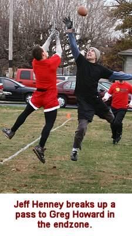
"When you only have 14 seconds
to go, it's very difficult to get a deep pass completed," stated announcer
Tony Cork. "With all of their timeouts left I thought they might try
dumping off a short pass to Greg or Trimble and seeing if they could take
it all the way. The way the Spider Monkeys were looking on defense I'm not
sure any of them would have been able to bring them down. However, if you
do catch a short one and they run for a while and get tackled then the clock
runs out anyway, so once again it's hard to know what the best play is in
that situation."
It was the first time in Cork Bowl
history that the game was in the balance on the final play. "The last
thing our team wanted was overtime," said Chris Cork. "We were
done. We sure weren't going to stop them, so the only way we would have
won in overtime was if they made a mistake. Thankfully we didn't have to
worry about it."
Both quarterbacks had their best quarter
of the day in the final period. With weary receivers at every position,
Willy was able to connect on 17-of-22 passes for 6 touchdowns while Reggie
was 12-for-18 with 5 touchdowns. Trimble and Patrick Cork both had huge
quarters with each player catching 6 passes and scoring 3 touchdowns. Henney
had 5 catches and one score while Wilson had 4 catches and a touchdown.
Despite coming up on the short end
of the scoreboard, the MVP award was given to Pronghorn Robert Trimble.
Trimble won his first MVP award in Cork Bowl 15 in the snow, but was injured
in the second quarter last year and was unable to finish the game. He returned
with a vengeance and had a career high 17 catches and 6 touchdowns on offense
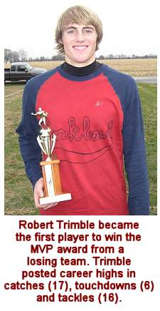 and
added 16 tackles on defense. "Obviously losing the game is the most
important thing," said Trimble. "I'd trade this award for a championship
ring in a heartbeat." Trimble is the first player in Cork Bowl history
to win the award in a losing effort. "If you're going to give the award
to someone on the losing team, they better deserve it," said Patrick
Cork. "And looking back at the tape, there was no doubt who the best
player was on the field. Trimble was everywhere on offense and defense and
we didn't have an answer for him. If he doesn't step up with that kind of
effort, we probably win by 2 or 3 touchdowns."
"Mike (color man Mike Miller)
and I couldn't believe the Spider Monkeys were able to hang on," said
veteran Cork Bowl announcer Tony Cork. "Halfway through the third quarter
they looked they were going to fall apart. All of them were exhausted, and
we weren't sure how they were going to keep scoring. They kept grinding
out first downs and touchdowns and although they were in some tough spots,
they always came through. There was no way they were stopping the Pronghorns,
and we were expecting the Pronghorns to make a big play or get a stop but
they never did."
The Spider Monkeys were led offensively
by all-time leading quarterback Willy Truitt who set several personal records
in the win. Truitt went 54-for-75 with 20 touchdowns and no interceptions.
The 54 completions were the second-most ever in a game for Truitt and the
20 touchdowns were a career high. It was also the third time in the last
four games that he did not throw an interception. His 72% completion percentage
was also the best of his career.
Patrick Cork led all receivers with
19 catches and a career high 9 touchdowns - one shy of Greg Howard's single-game
record of 10 set last year. The 19 catches gives Cork 225 receptions for
his career. Jeff Henney, who was playing in what might be his last Cork
Bowl before heading to the far east, had another outstanding game with 18
receptions and 6 touchdowns. In his first five Cork Bowls, Henney has caught
86 passes and scored 26 touchdowns. Chris Cork and Josh Williamson each
had 7 catches and scored 2 touchdowns. Evan Woodard, who failed to record
a catch in his rookie campaign last year, caught 3 passes and scored a touchdown.
Reggie Truitt returned to the quarterback
position for the second time in a row and hit on 45-of-70 passes for 19
touchdowns and one interception. The 19 touchdown passes were a career high.
Truitt also moved past the 200 mark in career completions. As mentioned,
Trimble led the Pronghorns 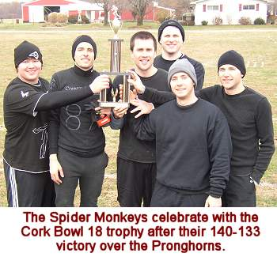 with 17 catches and 6 touchdowns - both career highs. Brooks
Wilson posted yet another double-digit receptions game with 12 catches and
6 touchdowns. Wilson has tallied at least 12 catches and 5 touchdowns in
each of the six games since he returned to Cork Bowl in 2003. Jake Hoalt
equaled his career high with 7 catches and had a personal best 4 touchdowns.
Kevin Ryan hauled in 5 passes with one touchdown and Greg Howard caught
4 passes and scored twice. The low numbers for Howard were a surprise after
Howard a long stretch of good outings. Howard was credited with just 3 dropped
passes, but a number of others were overthrown when Howard appeared to have
a step on the defender. "It seems like every year there is someone
that the quarterback has trouble completing passes to," said Howard.
"Apparently it was me this year. You have to give credit to Henney
too - he played a really good game defensively and it's hard to get throws
over him with his height." Howard was targeted 13 times by Reggie Truitt
in the game, but they only connected for 4 completions.
Trimble led all defenders with a career
high 16 tackles. Greg Howard had 7, Wilson and Reggie Truitt each had 5,
Jake Hoalt had 3 and Kevin Ryan 2. For the Spider Monkeys, Willy Truitt
equaled his career high with 6 tackles and Patrick Cork finished with 6
as well. Chris Cork, Josh Williamson and Jeff Henney each had 5 tackles
and Evan Woodard had 1. Henney had the game's lone interception.
In a game decided by just one touchdown,
you would expect the statistics to be very even and they were. The Spider
Monkeys outgained the Pronghorns 758 yards to 714 and had nine more completions
on five more passing attempts. The offensives were both outstanding as they
each scored on every possession except for one - not including the final
possession for the Pronghorns in which they had just 14 seconds to work
with."On the surface, it looks like there was very little defense played,"
commented winning quarterback Willy Truitt. "I don't think the defenses
were really that bad , but the offenses were outstanding. 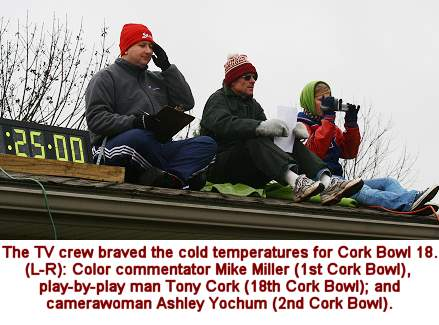 Both teams kept making
big play after big play. There were a lot of drives where teams had 3rd
and long situations or were faced with fourth downs and they always found
a way to convert. A couple of bad throws or dropped passes in those situations
and people are talking about how the defenses stepped up and made plays
when they needed to." In 42 total possessions in the game, the teams
combined for only seven 4th down situations - and they converted on 6 of
the 7.
As is the case most years, many questions
remain regarding the future of the game. The likely departure of Henney
will open up another roster spot, and Cork Bowl would love to get a veteran
player like Ryan Tomlinson or Kirby Newell to fill it. Williamson's distance
of 7+ hours will surely come into play once again as well, and the aging
receivers Chris Cork and Brooks Wilson aren't getting any younger. If Reggie
Truitt's back injury continues to linger, his status may be in question
as well. "We could have anywhere from one to five new faces on the
field next year," remarked Commissioner Patrick Cork. "We really
won't know much until the summer rolls around and we see who resport to
camp. This offseason will be an interesting one to say the least."
With the past few years being dominated by nearly unstoppable offenses,
the league continues looking for ways to help the defenses. Some sort of
rushing the passer rule would be ideal, but with the injuries and age of
some of the league's top signal callers (Tony Cork, Reggie Truitt and Kirby
Newell), the league has been hesitant to institute such a rule. "It's
more important to have these legends on the field than it is to change the
rules around just to do it," added Commissioner Cork.
Cork Bowl 18 Game Notes:
Willy Truitt's big day moved him
past a pair of milestones and he has now has over 400 completions (422)
and 150 touchdowns (155)....Patrick Cork's 19 catches and 9 touchdowns put
his career totals at 225 and 77....With two touchdowns each, Greg Howard
and Chris Cork remain tied for 2nd in all-time touchdown receptions with
57...Jeff Henney's second quarter interception was the 7th of his five-year
career - ranking him 6th on the all-time list...Chris and Patrick Cork both
registered the 100th tackle of their careers (Patrick 103, Chris 100)...After
not recording a catch in his first game last year, Evan Woodard had 3 catches
and scored the first touchdown of his career...Kevin Ryan is just two catches
shy of the century mark with 98 career receptions...Jeff Henney's 18 catches
moved him to 6th on the all-time list in career receptions with 86 (passing
Kirby Newell and Reggie Truitt)...Willy Truitt failed to throw an interception
for the third time in his career - Truitt has just 3 interceptions in his
past 311 attempts...Robert Trimble's 17 catches and 6 touchdowns nearly
doubled his career numbers and moved him to 11th all-time in receiving (44
receptions, 12 touchdowns)...
(Click Here for
More Pictures!)
Back to top
Cork Bowl 18 Stats
Back to Cork Bowl |